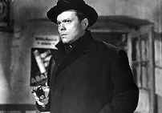
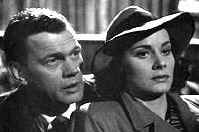
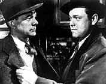

|
Third Man,The(SE)/A,A |
|
Voyager/1949/104m/FS 1.33/BW |

BY GARY MORRIS
In one of the many extras in Criterion’s sumptuous DVD presentation of Carol Reed’s The Third Man, Peter Bogdanovich calls the film "the greatest non-auteur film ever made." The idea that Reed was not an auteur, merely a gifted technician, is difficult to credit in light of the director’s career and particularly The Third Man. True, the contributions of others shine here — Graham Greene’s impeccable script; Vincent Korda’s superb art direction; a fabulously polished studio look (some of it was shot at Shepperton Studios, some on location in Vienna); even the haunting zither score by Anton Karas. But the film’s beauty and power clearly come from the same directorial sensibility behind Odd Man Out, The Fallen Idol, and Outcast of the Islands. Reed’s personality pervades the visuals — endless tilted angles, forced perspectives, chiaroscuro lighting — and the film’s melancholy themes of moral tests and the failure of human beings to meet them, and the difficulty — if not impossibility — of human relations in an unpredictable world.
After years
of making the repertory rounds in splicy, sometimes shrunken or
damaged prints, The Third Man was re-released to
acclaim in 1999 in a digitally remastered print. This version is
razor sharp, virtually flawless, preserving the film’s
extraordinary clarity and textured darkness. Of the many
"foreign noirs" and textbook masterpieces of the
period, this is one that has to be seen in as pristine a shape
as possible.
The
story is a familiar one for fans of Graham Greene and Reed. The
scene is postwar Vienna, a city under the schizoid control of
four powers in uneasy alliance: Britain, France, Russia, and
Austria. As in all such contested realms, morality is lax, and
illegal trafficking of all kinds pervades the city, from
smuggled shoes and tires to watered-down penicillin that kills
or mentally maims its victims.
Holly
Martins (Joseph Cotton), a somewhat naïve writer of pulp
westerns, arrives in Vienna expecting to meet his old friend
Harry Lime (Orson
Welles). But Lime has apparently been accidentally killed by
a car driven by his own chauffeur, and their "meeting"
is at the funeral. But Martins, too curious for his own good,
hears contradictory stories about the circumstances of Lime’s
death. Witnesses disappear or are murdered. Martins himself is
chased by unknown assailants through the glamorously dark
streets of Vienna. Complicating matters are the sardonic Major
Calloway (Trevor Howard), head of the British forces, and
Lime’s mistress, Anna (Alida Valli), who ironically is a stage
actress in comedies that are the antithesis of her misery over
the death of her lover.
The
film methodically constructs a curious picture of the missing
Lime through the comments of those who knew him. Martins
remembers him as a charismatic friend. Anna’s unquestioning
adoration paints a picture of Lime as a romantic. Major Calloway
offers a startlingly different picture of this elusive man as a
morally rotten racketeer; he shows a suddenly sobered Martins
the effects of Lime’s work in a hospital filled with children
dying from the watered-down vaccines that were part of the dead
man’s "business enterprises."

Lime
chillingly embodies the chaos of a postwar world with his
fascination with survival and triumph at the expense of any
moral values. Reed captures this world with a camera that’s
often grotesquely skewed, images of a Vienna seen almost
exclusively at night, and supremely, the haunting presence of
Lime as a literal shadow looming large over the pathetic daily
lives of the ordinary people who are his victims. The
informative production history on the DVD tell us that Welles
was in a sense as "missing" as his character at
certain pivotal points in the film. When he arrived in Vienna,
he apparently disliked the sewer system and demanded a studio
version be built in England. When Welles fled, the ingenious
Reed improvised, casting assistant director Guy Hamilton as
Harry Lime in shadow, having him dress in a black coat and hat
and run across an arc light to project that large ominous
shadow.
 |
Welles is almost as famous for this role as for Citizen Kane,
but his screen time is considerably less. While he makes the
most of his scenes, which include a desperate run through a
sewer system that looks like a Rembrandt painting, The Third
Man is as much about Martins’s dilemma, his awakening to
the sordidness of life, and Anna’s refusal to awaken to it.
Acting credits are superior throughout, from the leads to the
decoratively weird characters who cross Cotton’s path and help
flesh out this bizarre world. These include a carping old
landlady perpetually wrapped in a blanket and a strange child
who convinces a mob that Martins is a murderer.
The DVD includes the restoration of
Reed’s original, more cynical opening speech (David Selznick
replaced it with a tamer version by Joseph Cotton, also
available here). There are also a couple of radio drama
versions, a solid stills gallery to go with the production
history, a quickie restoration demonstration, concert footage of
composer Anton Karas playing his famous zither ("He’ll
have you in a dither with his zither!"), two different
trailers, and subtitles for the hearing impaired. All
considered, a masterful use of the DVD medium in the service of
a fine film.
Bright Lights Film
Journal
January 2000 | Issue
27
Copyright © 2000 by Gary Morris

Gary Morris's DVD Reviews are reprinted from Bright Lights Film Journal. Click on the image above for more pure movie views.
The Feature
Archive has articles ranging from John
Ford to Blonde
Bimbos, Akira
Kurosawa and Frank
Darabont.

Click on the image above to access The
Heistmasters, a view of the best directors of the
heist.
Check out the Movie
Poster Archive for short bios and images of
Susan Hayward, Kirk Douglas, Katharine Hepburn and many more.
This month's featured star is Clark
Gable.
Imaging
Science Foundation
The Imaging Science Foundation promotes
proper standards in home theater viewing. ISF trained
technicians offer monitor calibration services to consumers. The
difference in a properly calibrated monitor can be
astounding. Click on the image to find an ISF member near you.
HOT
LINKS
DVD
Verdict
They
may be judgmental, but that's the point, isn't it. Lots of DVD
reviews plus news and more
Home
Theater Reference Reviewing System

When you read a DVD review it's of utmost
importance to know what equipment is being used to evaluate
quality. Click on the projector to find out more.
The
Home Theater Forum
Looking for
lively and helpful exchanges on home theater, DVD, movies. Visit
this friendly site and get a hardy welcome.